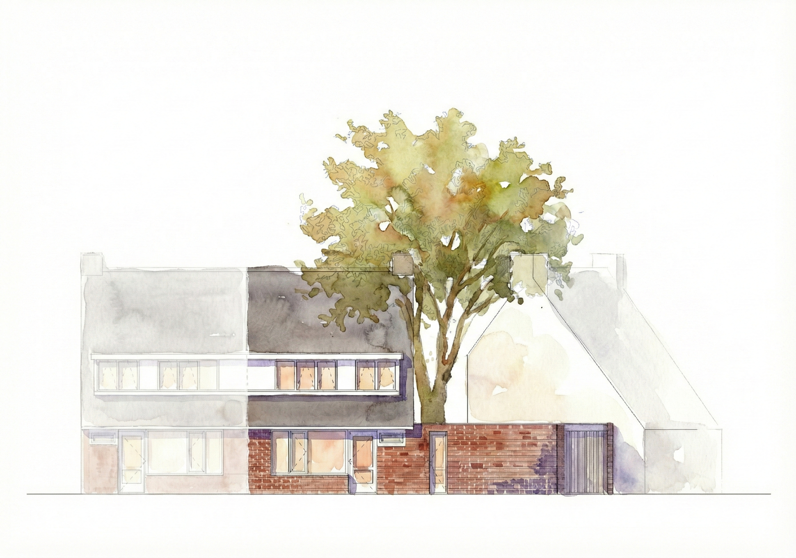
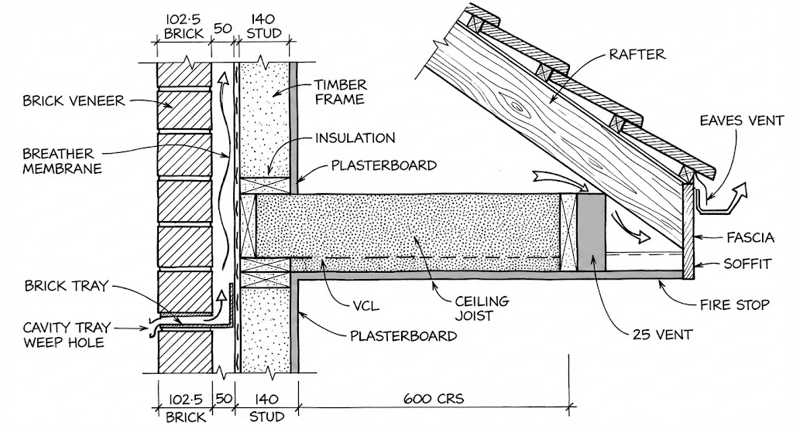
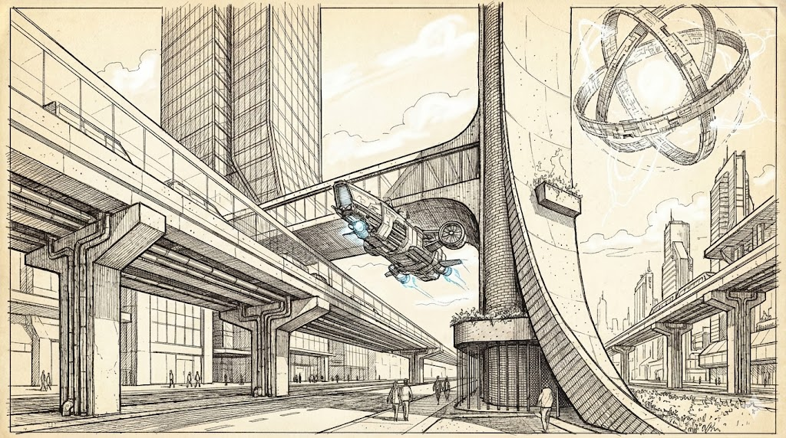

Current Proficiency
Current models such as Stable Diffusion 3, Midjourney v6, and DALL-E 3 are capable of producing images that outperform traditional rendering, compressing it to a task of mere minutes.
These systems encode a vast "latent space" of architectural history, allowing for the generation of hundreds of iterations of massing studies or facade concepts in moments.
Herein lies a interesting potential for architectural firms with a big archive of architectural drawings. This archive can be used to train private models to generate certain types of drawings.

In-Painting & Workflow
These models excel at "In-Painting"—changing materials or textures within specific boundaries. Having a solid anchor to hold them to the intent of the prompt helps with the final product.
While 66% of architects were satisfied with AI for early-stage conceptualization in 2024, satisfaction drops precipitously to below 30% for later design phases, delineating the boundary between "suggestion" and "definition" [7].
THeoretical Horizon
Future models will not merely predict pixel color but will simulate light transport and material properties within the neural network itself, potentially replacing engines like V-Ray [8].
The goal is translating prompts directly into fabrication-ready BIM models complete with bolts, welds, and tolerances [9]. Deep research also implies "World Models" that function as latent simulators for real-time VR [10].
Yet none of these exist at the time.

The Precision Gap
Generative models remain "hallucinatory" engines that prioritize plausibility over truth. They frequently generate "impossible" geometry, such as stairs to nowhere or columns that don't reach the ceiling [3].
While improving, models like SD3 still struggle with fine-grained details, often rendering legible text as gibberish due to processing it as visual patterns rather than linguistic symbols.

Symbol Grounding Problem
AI lacks phenomenological understanding; it processes architecture as statistical tokens rather than felt realities and cannot judge the "atmosphere" of a room [11].
Furthermore, AI cannot hold legal authorship or liability. It cannot be sued for design failure, meaning it can never fully replace the professional architect's role in ensuring public safety [12].